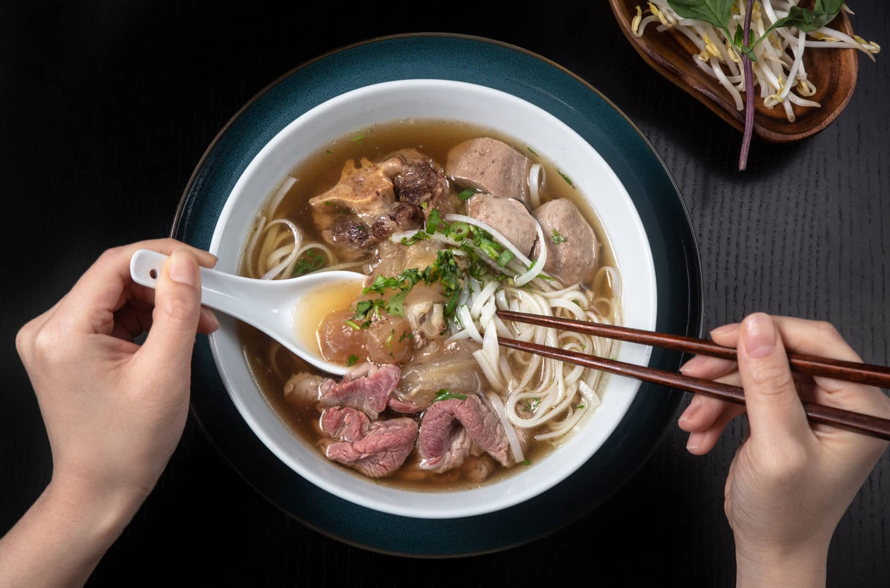
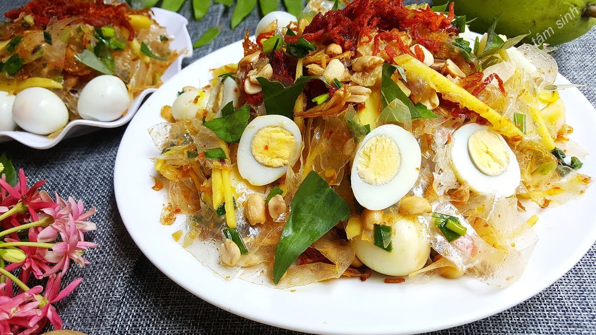

Pho , Vietnam's iconic noodle soup, has captivated taste buds worldwide. Renowned chefs have attempted to replicate its authentic flavors and elevate this beloved dish.
This is the recipe that i recommend for this dish: Pho recipe
Banh trang tron, a popular Vietnamese street food, is a delicious and addictive snack made with crispy rice paper tossed in a tangy, spicy sauce.
This is the recipe that i recommend for this dish: Banh trang tron recipe
Finally, Bun bo Hue a fiery and flavorful Vietnamese noodle soup, is a culinary masterpiece that will leave your taste buds tingling."
This is the recipe that i recommend for this dish: Bun Bo Hue recipe